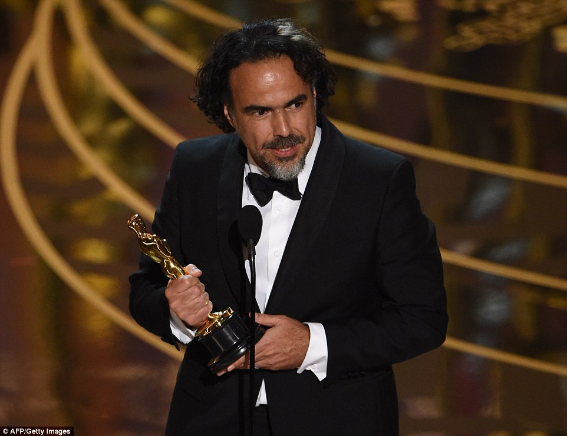
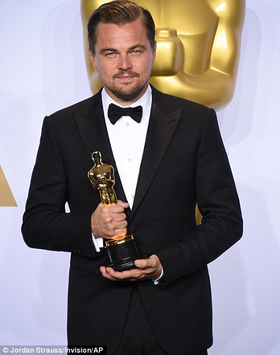
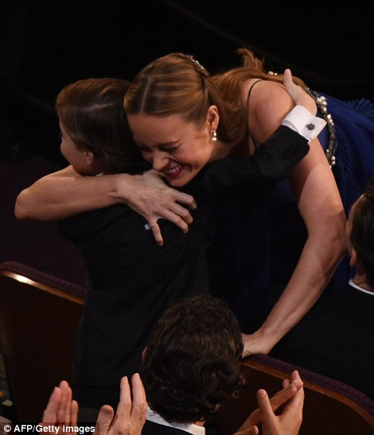
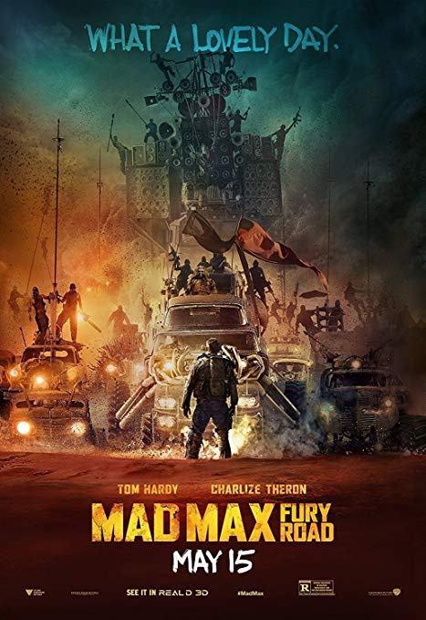

Brie Larson, Leonardo DiCaprio, and Spotlight took home the top prizes at the Academy Awards Sunday evening. Mad Max: Fury Road was the night's big winner with six total nods. Check out Awards Central for photos from the red carpet, photos from the show, press room and parties, plus the full list of the winners.
|
 |  |  |
| >Red Carpet Photos | Show Photos | Press Room Photos | Party Photos |
 |
Spotlight Michael Sugar, Steve Golin, Nicole Rocklin, Blye Pagon Faust |
 | Mad Max: Fury Road Dong Mitchell, George Miller |